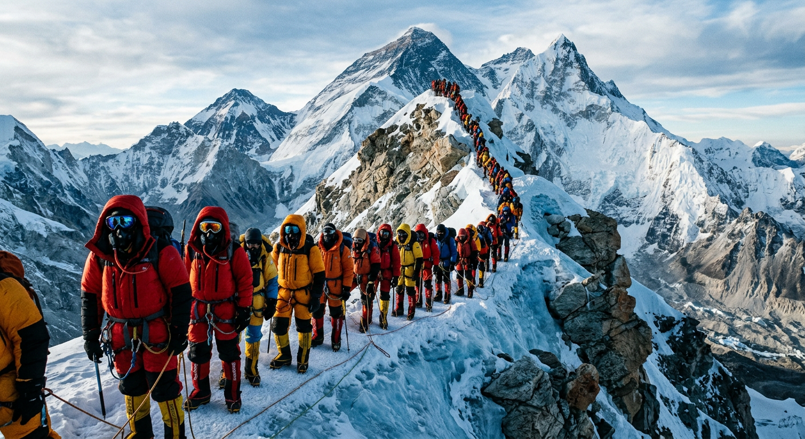
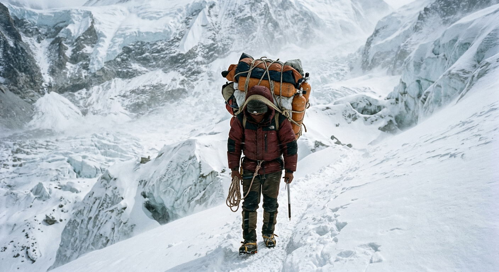

From 22 to 279 in two years
In 2020 the Nepal Himalaya recorded 22 expeditions. Two years later, in 2022, it recorded 279 - a 12.7x rebound. By 2023 the count was still 274 and by autumn 2024 the slice had already booked another 100. This is not a sport recovering; it is an industry being rebuilt at a different scale.
The same boom that filled this dataset filled the news. In spring 2023 Nepal issued a record 478 Everest permits and at least 17 climbers died, making it the deadliest Everest season ever recorded. In 2024 Nepal's Supreme Court ordered the government to limit permits.
And yet success rates climbed too: 80.7% of expeditions summited in 2023 and 81.0% in the partial 2024. The mountains have become statistically more survivable for the people on top, even as the absolute body count rose. That paradox is the story.
Three mountains, half the calendar
Of 480 catalogued peaks in the Nepal Himalaya, three absorbed 49.0% of all 2020-2024 expeditions. Everest alone took 21.4% (189 expeditions). Ama Dablam, the technical 6,812 m trophy peak in the Khumbu, took 16.7% (147). Manaslu, marketed as the "easiest 8000er," took 10.9% (96).
The next tier - Lhotse, Himlung Himal, Dhaulagiri I, Makalu, Baruntse, Annapurna I, Kangchenjunga - dropped sharply: each under 10% of the total. Eight of the world's fourteen 8000ers lie in or partly in Nepal, but climbing tourism is not distributed across them. It clusters on the names you have heard of.
From 93% to 27%
Among peaks attempted at least ten times, success rates span 93.2% (Ama Dablam) down to 27.3% (Pumori). Everest sits near the top at 89.4%, alongside Annapurna I (86.4%) and Lhotse (86.1%). Dhaulagiri I, the seventh-highest mountain in the world, sits in the middle at 51.4%.
What separates the top from the bottom is not the height of the peak. It is the infrastructure: which mountains have paid Sherpa rope-fixing teams, fixed oxygen caches, and a known weather-window. Ama Dablam is technical but commercially "solved." Pumori is a smaller peak but lacks that machinery. The peaks that get climbed are the peaks that have been industrialised.
When climbers fail, the sky wins
Across all 882 expeditions, 71.2% ended in success on the main peak and another 2.95% on a sub-peak. Of the failure modes, "bad weather (storms, high winds)" was the largest at 8.84% of all expeditions, followed by "bad conditions (deep snow, avalanching)" at 6.12% and "illness, AMS, exhaustion or frostbite" at 2.83%.
Restricted to the 228 expeditions that did NOT summit, the picture is starker: weather and conditions together account for 57.9% of all failures. Pure technical difficulty - the romantic image of the unclimbable cliff - explains just 3.95% of failures, and outright accidents 2.19%.
In other words, in the modern era of fixed ropes and Sherpa support, climbers don't usually fail because the route beat them. They fail because the sky did. That is a profound shift from the heroic-failure narrative.
The 38-point oxygen line
The strongest binary predictor of summit success in this dataset is whether the expedition used bottled oxygen. With oxygen: 94.4% summited (386 of 409). Without oxygen: 56.7% (268 of 473). A 37.7 percentage-point gap.
Above 7,500 m the body cannot acclimatize indefinitely; bottled oxygen lowers the effective altitude. The gap is not just a chemistry effect, however. Oxygen marks a specific style of climbing: large commercial expeditions with Sherpa support, fixed lines, and pre-stocked oxygen caches at high camps.
Counter-intuitively, oxygen-using expeditions also recorded MORE deaths per expedition: 7.6% vs 1.5% for no-oxygen. That is selection bias, not chemistry. Oxygen-using expeditions go to Everest and Manaslu where altitude itself is lethal; no-oxygen expeditions cluster on Ama Dablam at 6,812 m. The oxygen line marks where the lethal mountains begin.
The eight 8,000-metre peaks of Nepal
The eight 8,000-metre peaks in the Nepal Himalaya absorbed 483 of 882 expeditions (54.8%) in 2020-2024. Per 1,000 people-on-mountain in this slice, the death rate ranged from 0.0 (Cho Oyu, with 212 climbers and zero deaths) to 7.30 on Everest (4,659 climbers, 34 deaths) and 6.08 on Kangchenjunga (329 climbers, 2 deaths).
Annapurna I shows up here with a 86.4% success rate and a 2.92 per 1,000 death rate over 22 expeditions - well below its long-run reputation. The Himalayan Database itself credits Annapurna with a cumulative 13.42% fatality-to-summit ratio across all history (75 deaths, 559 ascents). The 2020-2024 window is a quiet chapter for Annapurna, not a vindication.
What the slice does show: even within the 8000ers, death rates differ by more than 3x between Everest and Manaslu. The mountain you climb matters more than your bottle of oxygen.

Sherpas: 32% of the deaths
In 2020-2024, the dataset records 53 deaths total: 36 members and 17 hired staff. Sherpas and other hired support make up 32.1% of deaths, while accounting for roughly half of the people on the mountain (6,716 hired vs 7,226 members). Per-person death rates: members 4.98 per 1,000, hired 2.53 per 1,000.
Per-person, members were twice as likely to die as their Sherpas. But the absolute count - 17 Sherpa deaths in five years - is the human face of the commercial machinery that delivered 79.2% success rates for client expeditions versus 48.6% for alpine-style teams climbing without hired staff. Sherpas turn rope-fixing, oxygen-caching, and load-carrying into routine. The cost of that routine is partly absorbed in their fatality count.

Spring rules, winter punishes
Climbing is bimodal in Nepal. Spring (Mar-May) hosts 52.4% of expeditions, Autumn (Sep-Nov) 44.7%. Summer (the monsoon) and Winter together fill the remaining 3%. Success rates: Spring 77.1%, Autumn 72.8%, Summer 60.0% (n=5), Winter 38.1%.
Winter expeditions on Nepal's high peaks are rare and brutal. Of 21 winter attempts in this slice, only 8 succeeded. Spring's pre-monsoon stable weather plus the famous May summit window explains why the climbing year is built around it.
Sixty-four nations on the mountain
Sixty-four distinct principal nationalities appear in the 2020-2024 record. Nepal led with 130 expeditions (14.7%), followed by the USA at 117 (13.3%), the UK at 91 (10.3%), India and France tied at 51 each (5.8%). Germany, China, Austria, Russia, Japan, Spain rounded out the top ten.
Nepal's leading position reflects both domestic Nepali teams and the rise of Nepali-led commercial expedition companies. The same labour pool that supplies Sherpas now also supplies the operators who employ them.
112 unclimbed peaks remain
The peaks_tidy table catalogues 480 peaks, of which 112 (23.3%) remain unclimbed. They span 5,407 m to 8,077 m, with a median of 6,452 m - meaning that mountains taller than many Alpine summits have never been climbed by anyone. The Kanti/Palchung range holds the most unclimbed peaks (14), followed by Janak/Ohmi Kangri (12), Api/Byas Risi/Guras (11) and Khumbu (11).
These are not the famous mountains. They sit on the western and eastern flanks of Nepal and along the Tibetan border, far from the Lukla airstrip and the Khumbu base camps. The frontier of Himalayan climbing has not closed - it has just moved off the postcards.
What we measure now
Of 882 expeditions in this slice, exactly zero have CLAIMED set to TRUE and only two have DISPUTED set to TRUE. Elizabeth Hawley spent fifty years cross-checking summit claims so tenaciously that the climbing community called her "the Sherlock Holmes of the mountaineering world." In the era of GPS, smartphones, and Sherpa eyewitnesses, almost no one tries to fake a summit anymore.
Hawley's archive, now maintained by the non-profit Himalayan Database, has outlived her by seven years. The dataset behind this blog is the proof: a 2020-2024 window through which we can see commercial mountaineering at its largest scale ever, and read its inputs - permits, oxygen bottles, fixed ropes, hired Sherpas - against its outputs - 654 summits, 53 deaths, three peaks absorbing half the calendar.
What ends today on Everest doesn't end the questions Hawley asked. It just changes the form they take. Counting climbers used to mean catching liars. Now it means catching the system.